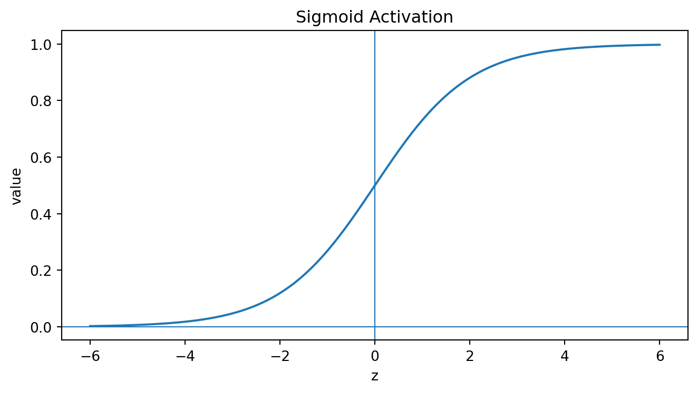
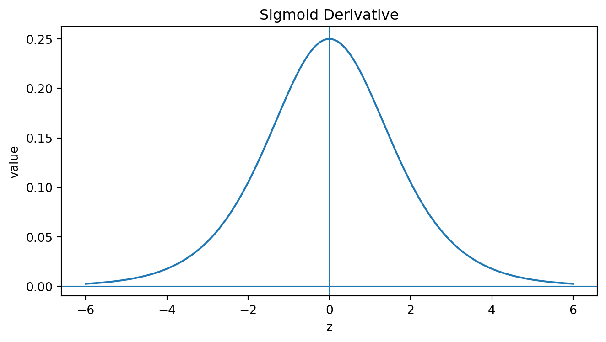
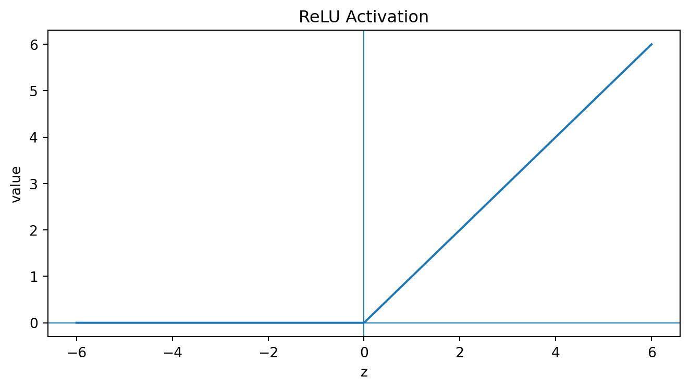
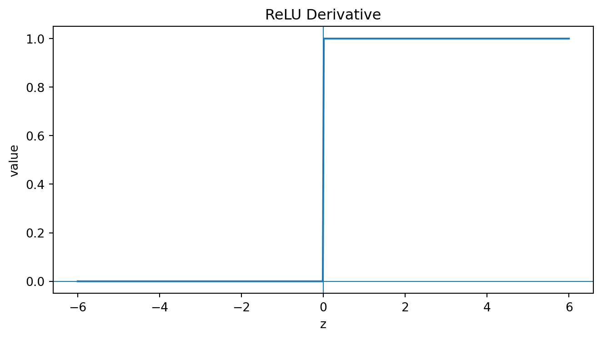
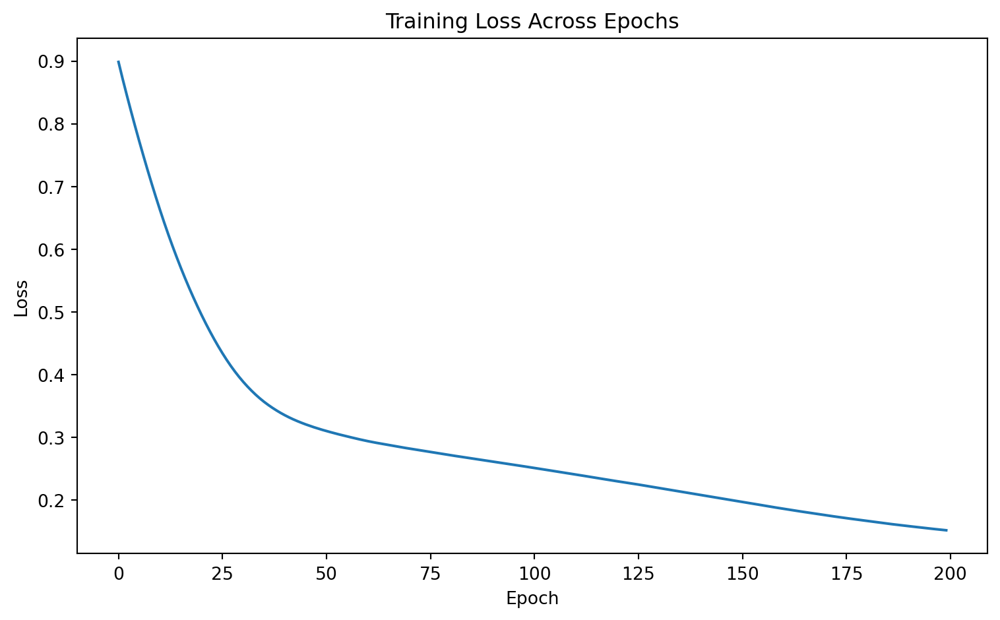
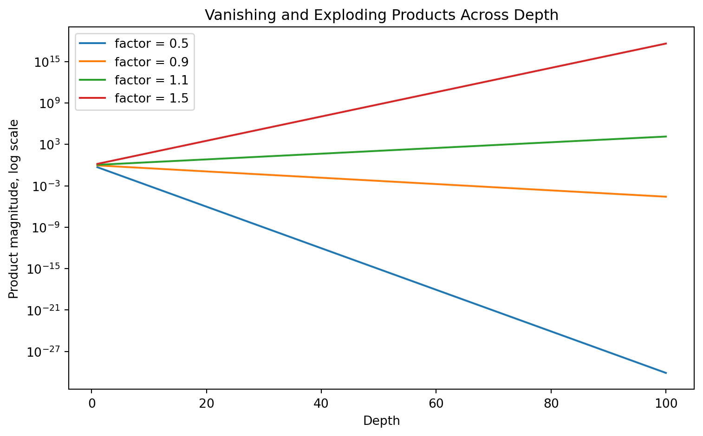
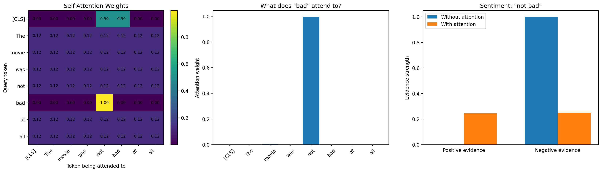

An artificial neural network is a nonlinear statistical model composed of interconnected computational units called neurons, arranged in layers. Each neuron computes a weighted combination of its inputs, adds a bias term, and applies a nonlinear activation function. By composing many such transformations, neural networks can represent highly complex functions.
At a mathematical level, an ANN is a parameterized function \(f_\theta: \mathcal X \to \mathcal Y\), where \(\theta\) denotes all trainable weights and biases. The input space \(\mathcal X\) may contain vectors, images, sequences, graphs, or other structured objects. The output space \(\mathcal Y\) may be continuous for regression, categorical for classification, or structured for more complex prediction tasks.
The central learning problem is to choose parameter \(\theta\) that minimize a loss function over observed data:
The strength of neural networks is that they can learn internal representations of data. In image recognition, early layers may learn edges, middle layers learn the shapes of or textures, and deeper layers can learn object parts. In language modeling, early representations can encode token-level information, while deeper layers encode syntactic, semantic, or contextual relationships. Thus, a neural network can be considered as a representation-learning machine.
1. Historical and Conceptual Background
Artificial neural networks are inspired by biological nervous systems. Early neural network ideas can be traced to perceptrons, but the modern revival of neural networks was strongly influence by the development of backpropagation as an efficient algorithm for computing gradients in multilayer networks. Rumelhart, Hinton, and Williams showed how backpropagation could adjust weights in networks of neuron-like units by propagating error derivatives backward through the network1.
Artificial neural networks are inspired by biological nervous systems
Later, universal approximation results showed that sufficiently large feedforward neural networks with appropriate nonlinear activation functions can approximate broad classes of continuous functions on compact sets. Cybenko, for example, proved a universal approximation theorem for networks with a single hidden layer and sigmoidal activation functions2.
In contemporary machine learning, deep learning refers to neural networks with many layers. These networks became especially powerful because of larger datasets, improved optimization methods, specialized hardware, better activation functions, regularization methods, and architectural innovations such as convolution, recurrence, attention, and generative adversarial training, which later on will be discussed.
2. The Basic Neuron
2.1. The Artificial Neuron
NoteDefinition: Artificial Neuron
Let \(x=(x_1, x_2, \dots, x_d)^\top\in \mathbb {R}^d\) be an input vector. An artificial neuron computes
\[
z = w^\top x+ b,
\]
where \(w=(w_1, w_2,\dots, w_d)^\top \in \mathbb R^d\) is a weight vector and \(b\in \mathbb R\) is a bias term. The neuron output is:
\[
\alpha = \sigma(z) = \sigma(w^\top x+b),
\]
where \(\sigma:\mathbb R\to\mathbb R\) is an activation function.
The neuron therefore performs two operations:
Affine transformation: \(z=w^\top x+ b\).
Nonlinear activation: \(\alpha = \sigma(z)\).
Without the nonlinear activation function, a multilayer network would collapse into a single linear model.
2.2. Why Nonlinearity Is Necessary
Suppose a two-layer network has no nonlinear activation. Then
\[
h = W^{(1)}x + b^{(1)}, \qquad \hat y =W^{(2)}h+ b^{(2)}.
\]
Substitute the first equation into the second:
\[
\hat y = W^{(2)}(W^{(1)}x+ b^{(1)}) +b^{(2)}=W^{(2)}W^{(1)}x + W^{(2)}b^{(1)}+b^{(2)}=\tilde{W} x+ \tilde b.
\]
Thus, without nonlinear activation functions, stacking layers does not increase expressive power. A deep linear network is still a linear model.
2.3. Activation Functions
Activation functions determine how each neuron transforms its pre-activation value \(z\). They are crucial for approximation power, optimization behavior, and gradient flow.
2.3.1. Sigmoid Function
The sigmoid activation is
\[
\sigma(z) = \frac{1}{1+e^{-z}}
\]
It maps real numbers to the interval \((0,1)\).
Its derivative is
\[
\sigma' = \sigma(z) (1-\sigma (z))
\]
Tip
Let \(\sigma = \frac{1}{1+e^{-z}}\). Then
\[
\sigma' = \frac{e^{-z}}{(1+e^{-z})^2}
\] Now observe that
The sigmoid is often used in binary classification output layers because it can represent a probability:
\[
\hat p = P(Y=1\,|\,x) = \sigma(z)
\]
However, sigmoid units can suffer from gradient saturation when \(|z|\) is large, because the derivative becomes close to zero.
Show code
import numpy as npimport matplotlib.pyplot as pltz = np.linspace(-6, 6, 500)sigmoid =1/ (1+ np.exp(-z))sigmoid_deriv = sigmoid * (1- sigmoid)for y, title in [ (sigmoid, "Sigmoid Activation"), (sigmoid_deriv, "Sigmoid Derivative"),]: plt.figure(figsize=(7, 4)) plt.plot(z, y) plt.axhline(0, linewidth=0.8) plt.axvline(0, linewidth=0.8) plt.title(title) plt.xlabel("z") plt.ylabel("value") plt.tight_layout() plt.show()


2.3.2. Hyperbolic Tangent
The hyperbolic tangent activation is
\[
\tanh(z) = \frac{e^{z}-e^{-z}}{e^z+e^{-z}}
\]
It maps real number to \((-1,1)\). Its derivative is
\[
\frac{d}{dz}\tanh(z) = 1-\tanh^2(z)
\]
Compared with sigmoid, \(\tanh\) is zero-centered, which can help optimization in some settings. However, it also saturates for large positive or negative values of \(z\).
Show code
tanh = np.tanh(z)tanh_deriv =1- tanh**2for y, title in [ (tanh, "Tanh Activation"), (tanh_deriv, "Tanh Derivative"),]: plt.figure(figsize=(7, 4)) plt.plot(z, y) plt.axhline(0, linewidth=0.8) plt.axvline(0, linewidth=0.8) plt.title(title) plt.xlabel("z") plt.ylabel("value") plt.tight_layout() plt.show()
At \(z=0\), the derivative is undefined, but in practice one chooses a subgradient, often 0 or 1.
ReLU became a standard activation in deep learning because it is computationally simple and helps reduce gradient for positive activations. However, ReLU units can “die” if they remain inactive, meaning their pre-activations stay negative and their gradients remain zero.
Show code
relu = np.maximum(0, z)relu_deriv = (z >0).astype(float)for y, title in [ (relu, "ReLU Activation"), (relu_deriv, "ReLU Derivative")]: plt.figure(figsize=(7, 4)) plt.plot(z, y) plt.axhline(0, linewidth=0.8) plt.axvline(0, linewidth=0.8) plt.title(title) plt.xlabel("z") plt.ylabel("value") plt.tight_layout() plt.show()


2.3.4 Softmax Function
For multiclass classification with \(K\) classes, the output layer often uses the softmax function. Given logits \(z=(z_1, z_2, \dots, z_K)\), the softmax output for class \(k\) is
Determine the number of trainable parameters of the following neural net:
Input layer: 4 units.
Hidden layer 1: 16 units.
Hidden layer 2: 8 units.
Hidden layer 3: 4 units.
Output layer: 2 units.
TipSolution
The number of trainable parameters between input layer and hidden layer 1 is \(16(4+1)=80.\)
The number of trainable parameters between hid.layer 1 and hid.layer 2 is \(8(16+1)=136.\)
The number of trainable parameters of hid.layer 2 and hid.layer 3 is \(4(8+1)=36.\)
The number of trainable parameters of hid.layer 3 and output layer is \(2(4+1)=10.\)
The total number of trainable parameters of the neural net is \(80+136+36+10=262.\)
3.3. Universal Approximation Theorem
NoteTheorem: Universal Approximation
Let \(K\in \mathbb R^d\) be compact and let \(f: K\to \mathbb R\) be continuous. Under suitable conditions on the activation function, for every \(\epsilon > 0\), there exists a feedforward neural network \(g\) with at least one hidden layer such that:
\[
\sup_{x\in K} |f(x) - g(x)| <\epsilon
\]
This theorem says that neural networks are capable of approximating continuous functions arbitrarily well on compact domains, provided the network is sufficiently large.
Maximizing \(\ell(\theta)\) is equivalent to minimizing \(-\ell(\theta)\), which is binary cross-entropy.
4.3. Multiclass Classification Loss
For multiclass classification \(y_i\in \{1, 2, \dots, K\}\), the network outputs logits \(z_i = (z_{i1}, \dots, z_{iK}).\) The softmax probability for class \(k\) is
If the true label is represented as a one-hot vector \(y_i = (y_{i1},\dots, y_{iK})\), where \(y_{ik}=1\) if observation \(i\) belongs to class \(k\), then the multiclass corss-entropy loss is
where \(\theta\) includes all weights and biases \(\theta = \{W^{(1)}, b^{(1)},\dots,W^{(L)}, b^{(L)}\}\). Because \(J(\theta)\) is usually nonconvex, closed-form solution are not available. Neural networks are trained with gradient-based optimization, requiring derivatives such as
In stochastic gradient descent, the update uses one example or a mini-batch rather than the full dataset. Mini-batch training is standard in modern deep learning because it balances computational efficiency and gradient stability.
Show code
import numpy as npimport matplotlib.pyplot as pltfrom sklearn.datasets import make_moonsfrom sklearn.neural_network import MLPClassifierfrom sklearn.preprocessing import StandardScalerfrom sklearn.pipeline import PipelineX, y = make_moons(n_samples=500, noise=0.25, random_state=42)model = Pipeline([ ("scaler", StandardScaler()), ("mlp", MLPClassifier( hidden_layer_sizes=(20, 20), activation="relu", solver="adam", max_iter=1, warm_start=True, random_state=42 ))])losses = []for epoch inrange(200): model.fit(X, y) losses.append(model.named_steps["mlp"].loss_)plt.figure(figsize=(8, 5))plt.plot(losses)plt.title("Training Loss Across Epochs")plt.xlabel("Epoch")plt.ylabel("Loss")plt.tight_layout()plt.show()

6. Optimization Challenges
6.1. Nonconvexity
Unlike ordinary least squares regression, neural network training is generally nonconvex. The loss surface may contain local minima, saddle points, flat regions, sharp valleys, plateaus.
Show code
import numpy as npimport matplotlib.pyplot as pltx = np.linspace(-2, 2, 100).reshape(-1, 1)y = np.sin(3* x)def neural_net_prediction(x, a, b):""" One-hidden-layer neural network: y_hat = c1*tanh(a*x + b) + c2*tanh(3*x - 1) + c3*tanh(-4*x + 0.5) Only a and b are changing. All other weights are fixed. """ h1 = np.tanh(a * x + b) h2 = np.tanh(3* x -1) h3 = np.tanh(-4* x +0.5) y_hat =1.2* h1 -0.7* h2 +0.5* h3return y_hatdef loss(a, b): y_hat = neural_net_prediction(x, a, b)return np.mean((y_hat - y) **2)a_values = np.linspace(-8, 8, 200)b_values = np.linspace(-8, 8, 200)A, B = np.meshgrid(a_values, b_values)Z = np.zeros_like(A)for i inrange(A.shape[0]):for j inrange(A.shape[1]): Z[i, j] = loss(A[i, j], B[i, j])fig = plt.figure(figsize=(14, 6))ax1 = fig.add_subplot(1, 2, 1, projection="3d")ax1.plot_surface(A, B, Z, cmap="viridis", alpha=0.9)ax1.set_title("Neural Network Loss Surface")ax1.set_xlabel("Parameter a")ax1.set_ylabel("Parameter b")ax1.set_zlabel("Loss")ax2 = fig.add_subplot(1, 2, 2)contour = ax2.contourf(A, B, Z, levels=50, cmap="viridis")plt.colorbar(contour, ax=ax2)ax2.set_title("Contour View of Loss Landscape")ax2.set_xlabel("Parameter a")ax2.set_ylabel("Parameter b")plt.tight_layout()plt.show()
The objective \(J(\theta)\) is nonconvex because the parameter appear inside nested nonlinear compositions. This does not mean neural network cannot be trained. In practice, stochastic gradient methods often find useful solution, especially in overparameterized networks. But it does mean that training depends a lot on initialization, learning rate, architecture, optimization algorithm, and regularization.
6.2. Vanishing and Exploding Gradients
In deep networks, backpropagation repeatedly multiplies by weight matrices and activation derivatives. For a simplified scalar chain,
If the factor have magnitude less than 1, the product can shrink toward zero. This is the vanishing gradient problem. If the factors have magnitude greater than 1, the product can grow rapidly. This is the exploding gradient problem.
These problems are especially important in recurrent networks, where the same transformations is repeatedly applied overtime.
Show code
import numpy as npimport matplotlib.pyplot as pltdepth = np.arange(1, 101)values = {"factor = 0.5": 0.5** depth,"factor = 0.9": 0.9** depth,"factor = 1.1": 1.1** depth,"factor = 1.5": 1.5** depth}plt.figure(figsize=(8, 5))for label, vals in values.items(): plt.plot(depth, vals, label=label)plt.yscale("log")plt.title("Vanishing and Exploding Products Across Depth")plt.xlabel("Depth")plt.ylabel("Product magnitude, log scale")plt.legend()plt.tight_layout()plt.show()

7. Regularization and Generalization
A neural network may contain many more parameters than training observations. Such a model can memorize training data rather than generalize. Overfitting occurs wen training error decreases but validation error increases.
Here \(\|W\|_F^2 = \sum_{i,j} W^2_{i,j}\). This discourages overly large weights and can improve generalization.
7.2. Dropout
Dropout randomly disable units during training. Let \(m^{(l)}\) be a random binary mask where each component is sampled as \(m_j^{(l)}\sim \text{Bernoulli}(q),\) which keep probability \(q=1-p\). The dropout activation is
Dropout can be interpreted as training an implicit ensemble of subnetworks.
7.3. Early Stopping
Early stopping monitors validation loss during training. If validation loss stops improving, training is halted.
Let \(J_{\text{train}}^{(t)}\) and \(J_\text{val}^{(t)}\) be the training and validation losses at epoch \(t\). Overfitting is suggested when \(J_{\text{train}}^{(t)} \downarrow\) but \(J_{\text{val}}^{(t)} \uparrow.\) Early stopping chooses parameters from an earlier epoch:
Convolutional Neural Networks, or CNNs, are designed for spatially structured data such as images. Their central idea is that local patterns should be detected using shared filters.
Convolutional Neural Network Architecture
For a one-dimensional signal \(x\) and filter \(w\), convolution can be written as
\[
z_t=\sum_{r=0}^{k-1} w_r x_{t+r}
\]
For a two-dimensional image \(X\) and filter \(W\), convolution is
The hidden state \(h_t\) acts as a memory of previous inputs.
RNNs are useful for:
language modeling,
time series prediction,
speech recognition,
sequence labeling,
translation.
However, basic RNNs suffer from vanishing and exploding gradients because the same recurrent transformation is applied repeatedly over time.
8.3. Long Short-Term Memory Networks
Long Short-Term Memory networks, or LSTMs, were introduced to address long-range dependency problems in recurrent networks. An LSTM maintains a cell state \(c_t\) controlled by gates.
The cell state creates a pathway through time that helps preserve gradients over longer intervals.
Show code
import torchimport torch.nn as nnimport torch.optim as optimimport matplotlib.pyplot as plttorch.manual_seed(42)torch.set_num_threads(2)def generate_memory_batch(batch_size=128, seq_len=80):""" Input: x_1 contains the important signal. x_2, ..., x_T are all zeros. Target: predict the original signal at the final time step. This tests whether the model can remember information from far in the past. """ x = torch.zeros(batch_size, seq_len, 1) bit = torch.randint(0, 2, (batch_size, 1)).float()# Use -1 and +1 as the input signal x[:, 0, 0] = bit[:, 0] *2-1# Classification target: 0 or 1 y = bitreturn x, yseq_len =80x_example, y_example = generate_memory_batch(batch_size=1, seq_len=seq_len)plt.figure(figsize=(10, 3))plt.plot(x_example[0, :, 0])plt.title(f"Input Sequence: Important Signal Appears at t = 1, Target Is Predicted at t = {seq_len}")plt.xlabel("Time step")plt.ylabel("Input value")plt.show()print("Target:", int(y_example.item()))
\(K\)represents what each token offers for matching,
\(V\)represents the information to be aggregated,
\(d_k\)is the key dimension.
The matrix \(\text{softmax}\left(\frac{QK^\top}{\sqrt{d_k}}\right)\) contains attention weights showing how much each token attends to each other token. Transformers are powerful because they allow every token in a sequence to interact with every other token directly, rather than passing information step by step through recurrent states.
Show code
import numpy as npimport matplotlib.pyplot as pltdef softmax(x, axis=-1): x = x - np.max(x, axis=axis, keepdims=True) exp_x = np.exp(x)return exp_x / np.sum(exp_x, axis=axis, keepdims=True)tokens = ["[CLS]", "The", "movie", "was", "not", "bad", "at", "all"]n_tokens =len(tokens)# We create small query/key vectors by hand.# This is for visualization, not real training.d_k =4Q = np.zeros((n_tokens, d_k))K = np.zeros((n_tokens, d_k))# Index helpersCLS = tokens.index("[CLS]")NOT = tokens.index("not")BAD = tokens.index("bad")MOVIE = tokens.index("movie")# Dimension meaning:# dim 0: looking for negation# dim 1: looking for sentiment words# dim 2: looking for subject/context# dim 3: filler/general matching# "bad" looks strongly for negationQ[BAD, 0] =4.0K[NOT, 0] =4.0# [CLS] looks for sentiment and negation because it represents the whole sentenceQ[CLS, 0] =3.0Q[CLS, 1] =3.0K[NOT, 0] =4.0K[BAD, 1] =4.0# "bad" also connects slightly to the subject "movie"Q[BAD, 2] =2.0K[MOVIE, 2] =2.0# Add weak self-matching so each token still attends a little to itselffor i inrange(n_tokens): Q[i, 3] =0.5 K[i, 3] =0.5scores = Q @ K.T / np.sqrt(d_k)attention_weights = softmax(scores, axis=1)# Value dimensions:# [positive_feature, negative_feature, negation_feature]V = np.zeros((n_tokens, 3))V[NOT] = [0.0, 0.0, 1.0] # "not" contributes negationV[BAD] = [0.0, 1.0, 0.0] # "bad" contributes negative meaning# Context vectors after attentioncontext = attention_weights @ V# Naive model sees "bad" and thinks negativenaive_positive =0.0naive_negative =1.0# Attention-aware model combines "not" and "bad"cls_context = context[CLS]positive_feature = cls_context[0]negative_feature = cls_context[1]negation_feature = cls_context[2]# Simple toy rule:# negative + negation becomes positive evidenceattention_positive = positive_feature + negative_feature * negation_featureattention_negative = negative_feature * (1- negation_feature)fig, axes = plt.subplots(1, 3, figsize=(18, 5))im = axes[0].imshow(attention_weights)axes[0].set_title("Self-Attention Weights")axes[0].set_xticks(range(n_tokens))axes[0].set_yticks(range(n_tokens))axes[0].set_xticklabels(tokens, rotation=45, ha="right")axes[0].set_yticklabels(tokens)axes[0].set_xlabel("Token being attended to")axes[0].set_ylabel("Query token")for i inrange(n_tokens):for j inrange(n_tokens): axes[0].text(j, i, f"{attention_weights[i, j]:.2f}", ha="center", va="center", fontsize=8)fig.colorbar(im, ax=axes[0], fraction=0.046, pad=0.04)# Attention distribution from "bad"axes[1].bar(tokens, attention_weights[BAD])axes[1].set_title('What does "bad" attend to?')axes[1].set_ylabel("Attention weight")axes[1].tick_params(axis="x", rotation=45)# Naive vs attention-aware sentiment evidencelabels = ["Positive evidence", "Negative evidence"]naive_scores = [naive_positive, naive_negative]attention_scores = [attention_positive, attention_negative]x = np.arange(len(labels))width =0.35axes[2].bar(x - width /2, naive_scores, width, label="Without attention")axes[2].bar(x + width /2, attention_scores, width, label="With attention")axes[2].set_title('Sentiment: "not bad"')axes[2].set_xticks(x)axes[2].set_xticklabels(labels)axes[2].set_ylabel("Evidence strength")axes[2].legend()plt.tight_layout()plt.show()

8.5. Autoencoders
An autoencoders is an unsupervised neural network trained to reconstruct its input. It consists of an encoder and a decoder.
Autoencoders
The encoder maps input to latent representation \(h = g_\phi(x)\). The decoder maps latent representation back to reconstruction \(\hat x = r_\psi (h)\).
However, exact Bayesian inference in neural networks is usually intractable, so approximation methods such as variation inference, Monte Carlo dropout, Laplace approximations, or Markov chain Monte Carlo are used.
# Monte Carlo Dropout predictiondef mc_dropout_predict(model, X, n_samples=200):""" Runs the model many times with dropout ON. Returns: - mean prediction - prediction uncertainty - all sampled predictions """ model.train() # Important:# We use model.train() at test time so dropout remains active. predictions = []with torch.no_grad():for _ inrange(n_samples): preds = model(X) predictions.append(preds.numpy()) predictions = np.array(predictions) mean_prediction = predictions.mean(axis=0) uncertainty = predictions.std(axis=0)return mean_prediction, uncertainty, predictionsmean_scaled, uncertainty_scaled, all_predictions_scaled = mc_dropout_predict( model, X_test_tensor, n_samples=200)# Convert predictions back to original target scalemean_prediction = y_scaler.inverse_transform(mean_scaled)y_test_original = y_test# For uncertainty, multiply by target standard deviationuncertainty = uncertainty_scaled * y_scaler.scale_[0]
\(H, W, C\) is image height, width, and number of channels,
\(\Delta^{K-1}\) is the \(K\)-class probability simplex.
9.2. Natural Language Processing
In natural language processing, neural networks map sequences of tokens to predictions. A sequence is \(x=(x_1,x_2, \dots, x_T).\) Each token is embedded into a vector:
For fraud detection, a neural network may estimate \(P(Y=\text{fraud}\,|\,x)\), where \(x\) includes transaction amount, location, merchant type, time, device, and user history.
9.4. Healthcare
In healthcare, neural networks are used for:
disease diagnosis,
medical image classification,
ECG arrhythmia detection,
drug discovery,
protein sequence classification.
patient outcome prediction
In high-stake settings, uncertainty and interpretability are critical. A model with high accuracy but poor calibration3 may be dangerous if clinicians interpret its output as a reliable probability.
9.5. Engineering and Control
Neural networks are used in:
robotics.
aircraft landing systems,
path planning,
energy management,
predictive maintenance.
In control settings, a neural network may approximate a policy \(\pi_\theta(a\,|\,s),\) where \(s\) is the system state and \(a\) is an action. The goal is to choose actions that optimize long-term reward.
9.6. Recommender Systems
Neural recommender systems learn embeddings for users and items.
Let \(u_i\in \mathbb R^d\) be a user embedding and \(v_j\in \mathbb R^d\) be an item embedding. A simple predicted preference score is
\[
\hat r_{ij} = u_i^\top v_j
\]
More complex neural recommenders use nonlinear networks:
These models power personalized recommendations in video platforms, e-commerce, music services, and online advertising.
10. Black-Box Behavior and Interpretability
Neural networks are often called black-box models because their predictions result from many nested nonlinear transformations. A prediction may depend on millions or billions of parameters.
For a deep network \(f_\theta(x) = f^{(L)}\circ f^{(L-1)}\circ \cdots \circ f^{(1)}(x)\), even if every operation is mathematically explicit, the overall function can be difficult for humans to interpret.
One mathematical way to examine sensitivity is the input gradient \(\nabla_x f_\theta(x)\). For image classification, a saliency map may use
A large value of \(S_j(x)\) suggests that input feature \(j\) strongly influences the output locally. However, gradient-based explanations can be unstable and should not be treated as complete causal explanations.
Artificial Neural Networks are nonlinear, compositional function approximators. Their basic computational unit is simple: a weighted sum, a bias, and an activation function. Their power comes from composing many such units into layered architectures capable of learning complex representations.
The multilayer perceptron provides the foundation. A network maps inputs through repeated transformations
\[
z^{(\ell)}=W^{(\ell)}a^{(\ell-1)}+b^{(\ell)}, \qquad a^{(\ell)}=\sigma(z^{(\ell)}).
\] Training minimizes a loss function using backpropagation, which efficiently computes gradients through the chain rule. The central backpropagation recursion,
\[
\delta^{(\ell)} = ((W^{(\ell+1)})^\top\delta^{(\ell+1)}) \odot \sigma'(z^{(\ell)}),
\] explains how errors move backward through the network and how weights are updated.
Neural networks are expressive enough to approximate broad classes of functions, but this expressive power creates practical challenges: nonconvex optimization, overfitting, vanishing gradients, hyperparameter sensitivity, computational cost, and weak interpretability. Regularization methods such as weight decay, dropout, and early stopping help control generalization.
Modern neural architectures extend the basic ANN idea to specialized data structures. CNNs exploit spatial locality in images. RNNs and LSTMs model sequences. Transformers use attention to model global dependencies. Autoencoders learn compressed representations. GANs generate synthetic data through adversarial training. Bayesian neural networks represent uncertainty by treating weights probabilistically.
Rumelhart, David E., Geoffrey E. Hinton, and Ronald J. Williams. “Learning Representations by Back-Propagating Errors.” Nature 323, no. 6088 (1986): 533–36. https://doi.org/10.1038/323533a0.↩︎
Cybenko, G. “Approximation by Superpositions of a Sigmoidal Function.” Mathematics of Control, Signals and Systems 2, no. 4 (1989): 303–14. https://doi.org/10.1007/BF02551274.↩︎
For a predicted probability, \(\hat p = P(Y=1\,|\, x)\), calibration means that among cases assigned probability 0.8, about 80% should truly belong to the positive class.↩︎